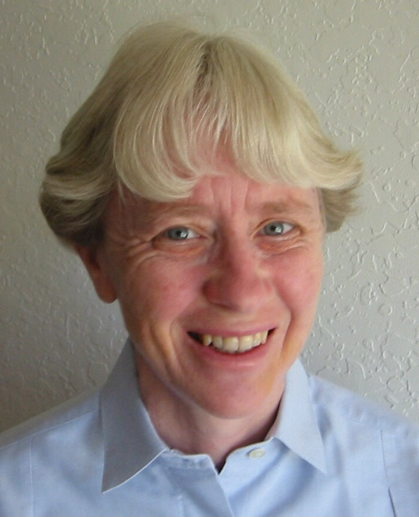
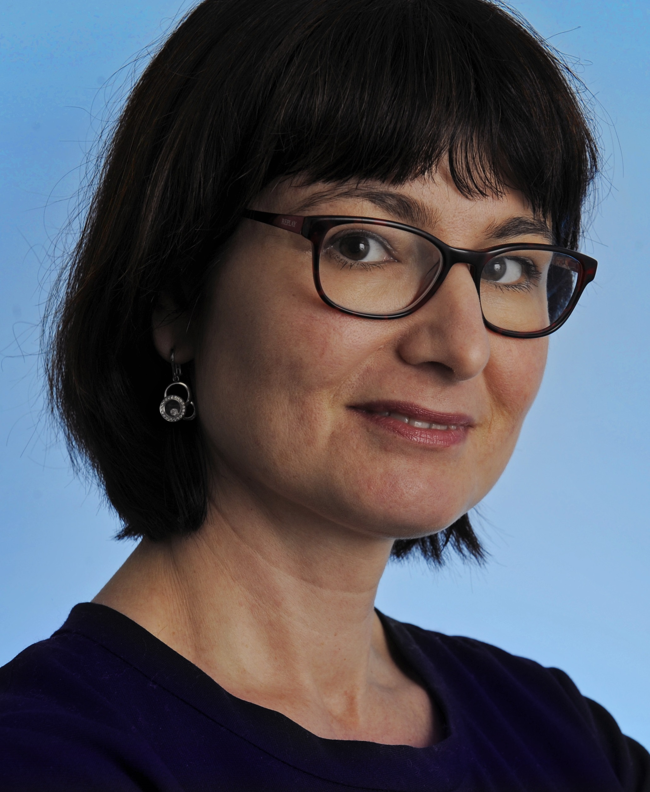
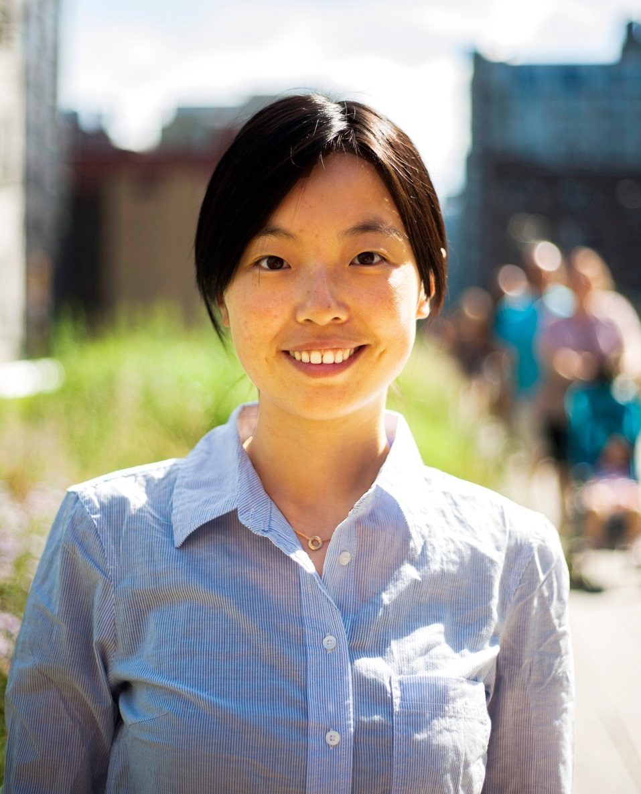
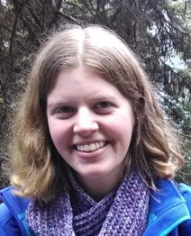

A celebration of women in applied probability
As part of the INFORMS APS programme, we would like to invite you to this event celebrating women in applied probability, which will take place on Wednesday 3 July 2019, 6:30 pm to 8 pm, at The Ship Inn in South Bank, Brisbane. There will be a Q&A session with a panel composed of four prominent researchers in the area of applied probability:
- Ruth J. Williams, University of California, San Diego, USA (Homepage, Q&A)
- Nelly Litvak, University of Twente, Netherlands (Homepage, Q&A)
- Jing Dong, Columbia University, USA (Homepage, Q&A)
- Kristy Gardner, Amherst College, USA (Homepage, Q&A)
This event is held not only to recognize the great achievements of female researchers in the field, but also to address problems and to propose solutions to gender issues and professional challenges of women mathematicians.
Refreshments will be provided after the event.
Registration for this event has now closed.
Q&A with the Panellist
Ruth J. Williams, University of California, San Diego, USA

What is your name and what do you do? My name is Ruth Williams. I am a Distinguished Professor of Mathematics at the University of California, San Diego where I hold the Charles Lee Powell Chair in Mathematics I. My main research interest is in probability theory and its applications. I am especially interested in developing theory and applications for stochastic processes. These are used for modelling dynamical systems subject to randomness in many fields in science and engineering. Some of my current research relates to models of the Internet and gene regulation.
Why do you do mathematics? I enjoy solving mathematics problems. I especially like working on theoretical problems that are motivated by applications. Knowing the application often guides me to ask relevant questions and can help with intuition concerning the problem.
As I was growing up in Australia, I was fortunate to have parents and teachers who encouraged my interest in mathematics and science. At the University of Melbourne, I received an excellent undergraduate education in mathematics, especially in analysis, which provided a firm foundation for my PhD studies in probability at Stanford University. My postgraduate advisors were an inspiration through their energetic engagement in research and their clarity of thought and exposition. My collaborators and students are an ongoing source of pleasure in my research endeavours.
What is a typical workday like for you? As a professor I pursue my research, teach graduate and undergraduate courses, advise PhD students, and perform service to my University and the profession. Any given day involves a mix of these, though I try to reserve some days or half-days just for research. As I have advanced in my career, service responsibilities have increased, and it has become even more important to dedicate blocks of time for research.
What keeps you in research? Have you had to overcome any barriers or problems? I have been fortunate that the applied probability community is a very supportive one. I particularly enjoy helping researchers in other disciplines solve mathematical problems related to applications.
An ongoing challenge is balancing the various activities that one engages in as a professor. This does not get easier as time goes on.
Do you have any advice for others who are starting a mathematical career? Develop a set of mentors. You don't need to find one person who can answer all queries. You can have a set of mentors, each of whom you ask for certain specialized advice. For example, you can have someone in your department or University who can advise you about local expectations and how things work, and also have a research mentor at another institution. There is much that is not written about anywhere that an experienced mentor can provide advice about. It is very helpful to have a research mentor provide feedback on drafts of grant proposals etc.
Network with other members of your research community. Going to conferences, giving talks and getting to know both senior and junior researchers in your field is very important.
Nelly Litvak, University of Twente, Netherlands

What is your name and what do you do? My name is Nelly Litvak. I am a professor at the department of Applied Mathematics at University of Twente and Eindhoven University of Technology in the Netherlands. My research is on algorithms for complex networks. Networks are all around us, such as Internet, World Wide Web, social networks and networks of scientific citations. Algorithms help us to extract information from the networks. Most prominent example is the Google PageRank algorithm designed to rank web pages by their importance. I use the theory of random graphs to understand how the algorithms work, what results they give, and how new algorithms can be designed.
Why do you do mathematics? As a little girl I multiplied numbers in my head just for fun. When I was choosing studies, I was doubting between mathematics and literature. My grandfather advised me to choose for math. Since then I am only more convinced every day that this was the right choice. Surprisingly even to myself, I came back to literature when I started writing non-fiction books.
I love mathematics, probably, for two main reasons. First, I feel genuinely excited when learning about new mathematical concepts and how they can be used. For example, when I was a student, I was deeply impressed by the concept of dynamic programming: if you start decision-making from the beginning, the number of options is exponential, but if you start from the end it magically becomes linear! I really like that by doing mathematics I keep learning such new concepts. Second, I enjoy formal logical arguments. Even when I write popular books, my readers notice the clear logic. Mathematics is the science where logic and precision reign supreme, and this speaks a lot to me. In fact, I believe that everybody should master logical thinking at least to some extent, and this could be probably the main goal of math education for non-mathematicians.
What is a typical workday like for you? The great thing about academia is that there is no such thing as a `typical day’. I could say that I would typically give a class, have some meeting, discuss research with students, read an article to referee, write a paper, or work on a grant proposal. And these are already very variate and will not fit in one day. Plus, we have conferences and research visits, travel all over the world! I believe that a big challenge in academia is to combine all activities. During a busy semester, teaching can be dominating, there is nothing wrong with this. But I regularly ask myself, how my working day looks like at the moment, and try to keep a balance on the long term.
What keeps you in research? Have you had to overcome any barriers or problems? What keeps me in academia is the combination of teaching and research. Nowadays, very solid research can be done in industry, but I like to teach and have contact with students. I love the challenge to teach math to the new generation, who are completely different from us, and they will still work in 40 years from now, in a completely different world.
Of course, academic career is full of obstacles. At the end of 1990-s, I was working in Russia, and Russian science was in a very bad shape. I decided to stay in academia rather than leaving to industry. So I moved to the Netherlands, broke up with my husband and took my 6-years old daughter with me. It was not easy, but it did work out great for us at the end.
Do you have any advice for others who are starting a mathematical career? For those starting academic career in mathematics, I will give two advices.
First, even if you did not achieve something in the early stage of your career, it does not mean that your career is over. There is this view that the best results are obtained by young scientists. But a recent study shows that this is not the case. The best results are obtained by active scientists, and it can happen at any age. Older people may be less productive simply because they stopped being active. Our brain does not age very much, especially if you keep it busy with challenging tasks. It is never late to learn and progress. In my opinion, academia is unnecessarily competitive. Do not pay too much attention on how high or low you are ranked in this blown-up competition! There is no such thing as an `ideal’ academic career. The only important thing is that you like what you do.
Second, find yourself a mentor. It should be somebody whom you respect and whose views on academia speak to you. As I wrote above, academic activities are very variate, and it is extremely important to set priorities. This is much easier to do if somebody helps you to define your best strategy. By asking the right questions a good mentor helps you to create in your mind a clear image of yourself at work, and once you have this benchmark you will know which work to do first, and which maybe not to do at all.
Jing Dong, Columbia University, USA

What is your name and what do you do? My name is Jing Dong. I am an Assistant Professor in the division of Decision, Risk and Operations at Columbia Business School.
Why do you do mathematics? It is a very elegant way of thinking. It brings a lot of fun or at least more fun than frustration.
What is a typical workday like for you? That highly depends on if I were teaching on that day or not. For my “teaching” days, I may teach from 9:00 am to 5:30 pm. I barely have any energy to even answer emails after that. For my “research” days, I try to reserve some quiet time for myself to read papers and think about problems.
What keeps you in research? Have you had to overcome any barriers or problems? I enjoy working on interesting and challenging problems and interacting with so many smart people. I always find it hard to deal with rejections. Unfortunately, in academia, that’s something we have to deal with quite a lot. Fortunately, I always have supportive collaborators and colleagues that I can talk to. I think I am also slowly building a core confidence in my research and that helps a lot.
Do you have any advice for others who are starting a mathematical career? Recently, I started realizing the importance of “marketing” your research. You are doing cool stuff and you should let other people know about it. Good marketing relies a lot on your writing and presentations skills, and I am still working on those skills myself.

What is your name and what do you do? My name is Kristy Gardner, and I'm an Assistant Professor in the Computer Science Department at Amherst College. Amherst is a small liberal arts college that serves only undergraduate students; my job involves a mix of research and teaching.
Why do you do mathematics? I think there's a lot of beauty in pure mathematics, and I find it very satisfying when all the details of a proof fall into place. At the same time, I like working on problems that have clear real-world applications. Applied probability is a perfect fit for me because I get to focus on the mathematical details in my day to day life, but it's easy to zoom out and explain to my non-mathematician family and friends how my work relates to their lives.
What is a typical workday like for you? During the academic year, I spend a lot of my time teaching. I teach two classes each semester, often to about 50 students per class, and a lot of my time goes into preparing for lectures, actually teaching the lectures, and meeting with students. On days when I don't teach class, I set aside a few hours in the morning to work on research. During the summers, the vast majority of my time goes towards research. This summer I've been spending mornings at an informal "writing retreat" with some of my fellow STEM faculty at Amherst, which has been a great way both to make writing progress on a daily basis and to build community with my colleagues.
What keeps you in research? Have you had to overcome any barriers or problems? Collaboration. It's easy to lose momentum in research — in mathematics in particular, I think! — when working in isolation. I'm in a very small department and none of my colleagues in my department have similar research interests to my own, so I've sought out collaborations with researchers at other institutions. I've found that working with other people is key in keeping my research exciting and moving forward.
Do you have any advice for others who are starting a mathematical career? Find an area of mathematics about which you are passionate and that you enjoy studying. And then find a community of people with whom you enjoy studying that area.